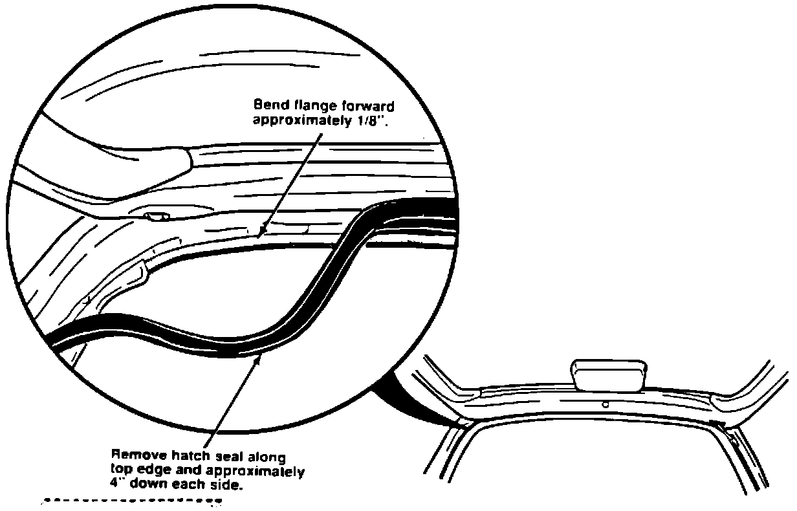

Hatch Seal - Wind/Water Leak
June 19, 1989BULLETIN NO. 89-012
YEAR 1990
MODEL Integra 3-Door
VIN APPLICATION ALL
Wind/Water Leak At Hatch Seal
PROBLEM
A wind and/or water leak from the upper corners of the hatch seal.
CORRECTIVE ACTION
At PDI: inspect for the water leak, by running water over the upper hatch seam area. and then checking for water on the cargo cover. For the wind leak,drive the car (on dealer lot) and listen for a whistling noise.
To repair a leaking hatch seal follow the steps below:
1. Open the hatch and remove the cargo cover.
2. Remove the hatch seal along the top edge and approximately 4" down each side.

3. Using a rubber mallet. bend the flange forward (toward front of car) approximately 1/8".
4. Reinstall the seal.
5. Check the sealing friction by inserting a piece of paper between the seal and the hatch. Close the hatch and pull out the paper. Significant resistance should be encountered. It not, additional flange adjustment is needed. Do this check at various places along the seal area.
6. Verify the leak is repaired and reinstall the cargo cover.
WARRANTY CLAIM INFORMATION
In warranty:
Normal warranty applies.
Out-of-Warranty:
This repair. like any repair performed after warranty expiration. may be eligible for goodwill consideration by the District Service Manager, You must request consideration. and get the DSM's decision, before starting work. Use the following claim information if DSM authorization is received.
Operation number: 839310
Flat rate time: 0.3 hour
Failed P/N: 74440-SK7-003
Defect code: 060
Contention code: 806